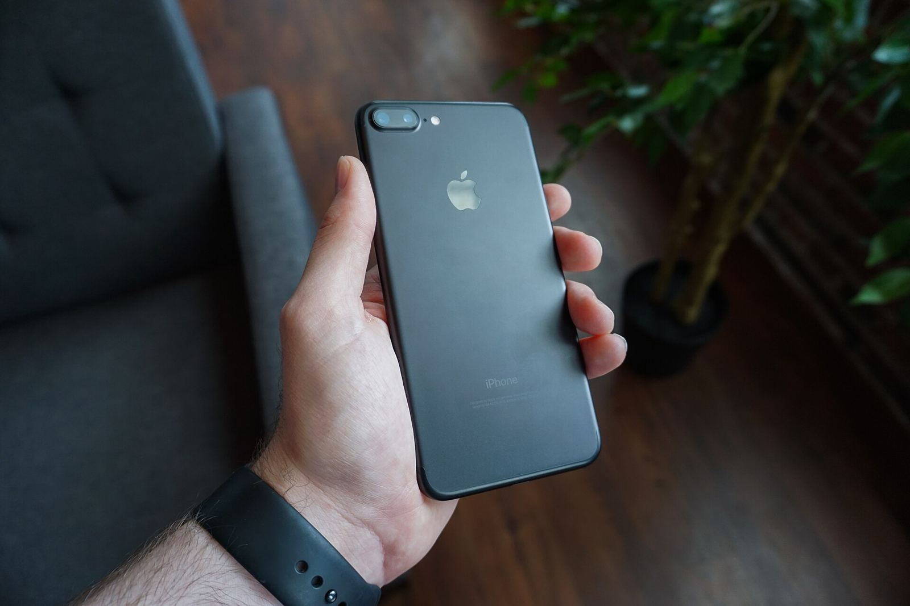
por prompt mediano do Gemini: “menos que nove segundos de televisão”, “cinco gotas de água”
Google, agosto de 2025
“Clanker”, “slopper”: a vergonha de usar IA. (Sarkar)
38 mil consultas ≈ 1 amêndoa. (Sam Altman, 2026)
Quem produziu esse número? E por que é esse o número que circula?
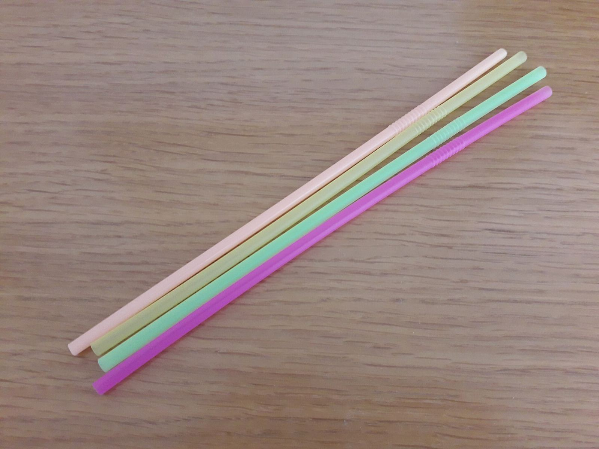
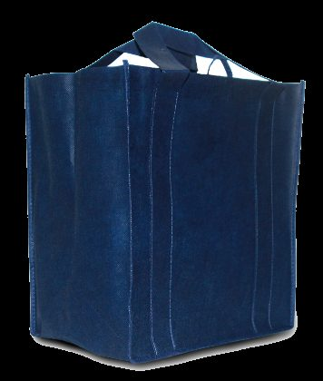
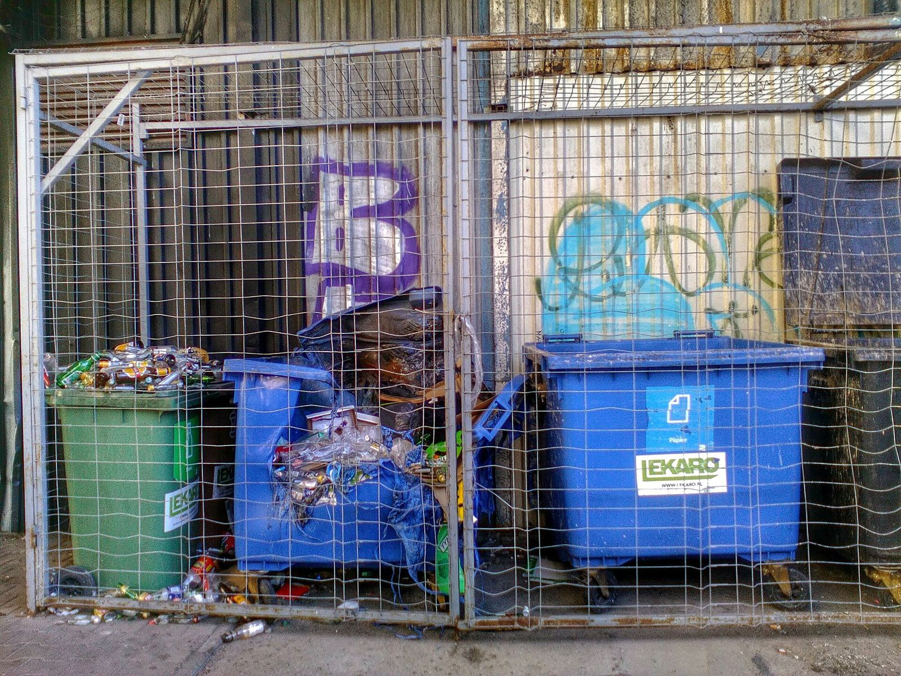
BP, 2004–2006: mais de US$ 100 milhões por ano em publicidade e uma calculadora on-line da sua pegada
Supran e Oreskes
o problema ambiental vira a soma das escolhas de cada um: plantar uma árvore, separar o lixo
Maniates, 2001
o sujeito do desempenho se explora sozinho. 75% usam IA no trabalho; 52% relutam em admitir
Han · Microsoft e LinkedIn, 2024
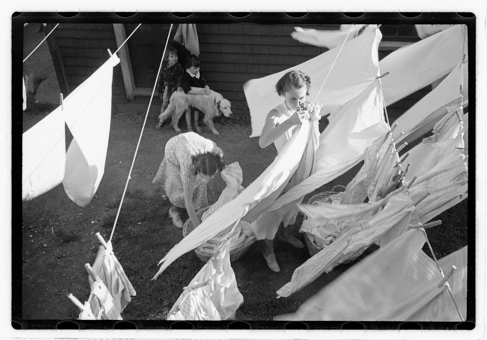
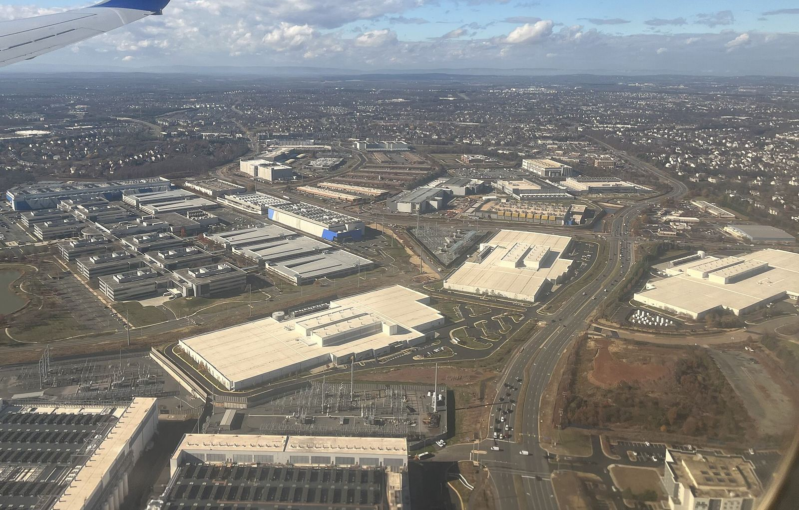
condições de fundo, “sem custo nas contas do capital” (Fraser)
contar prompts, moderar, sentir culpa: cuidado não pago (MacGregor)
quem decide ganha um passe; quem não decide carrega a conta (Tronto)
“Flood the zone”: não persuadir nem censurar, mas inundar. (Steve Bannon)
EUA, março de 2025: a EPA anuncia 31 medidas, “a maior ação desregulatória da história dos EUA”. Nada foi escondido. A notícia se afogou no meio dos escândalos.
De Debord a Han: do espetáculo imposto à distração que cada um pratica em si.
detectar → medir → reportar → investigar → litigar → reparar
O dano leva anos; a atenção dura horas. Basta um elo cair.
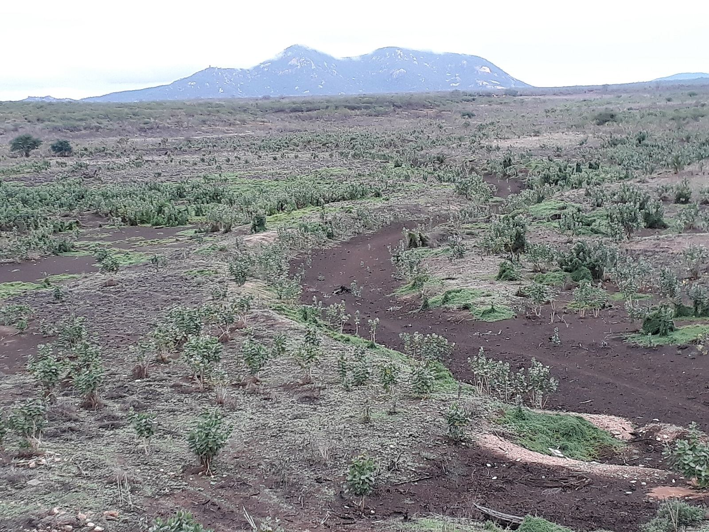
aproveitar que a imprensa só olha para a covid para mudar as regras ambientais
Ricardo Salles, reunião ministerial, 22 de abril de 2020
na Lei Geral do Licenciamento Ambiental
Lei 15.190/2025 · Congresso Nacional, 27 de novembro de 2025
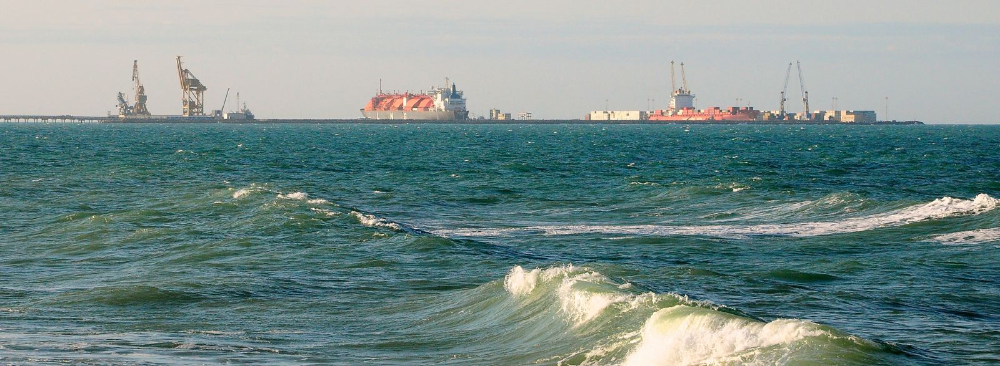
data center da ByteDance/TikTok: RAS em vez de EIA/RIMA, água subterrânea em região de seca, consulta aos Anacé
ação civil pública do MPF e da DPU, setembro de 2026
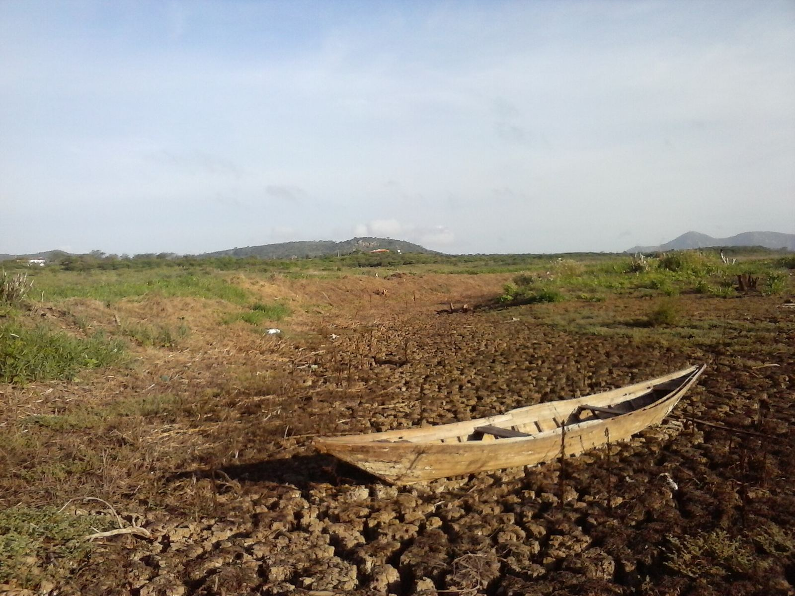
incentivo fiscal em troca de energia renovável, eficiência hídrica e “relatórios de sustentabilidade”, ou seja, autorrelato
Lei 15.504/2026 · teto de 0,05 L/kWh
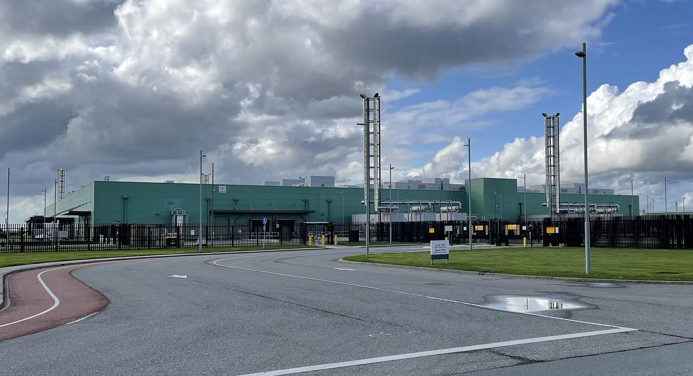
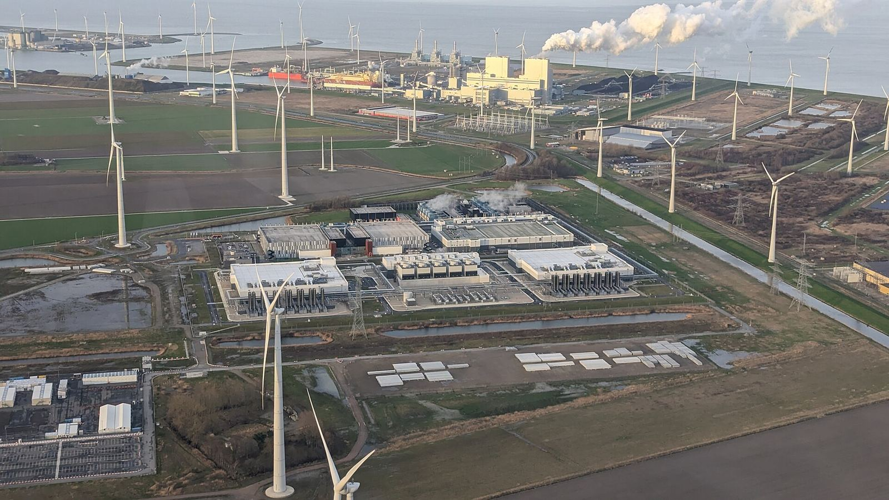
A lei manda publicar (Diretiva 2023/1791, art. 12)
→ o regulamento esconde (Reg. Delegado 2024/1364, art. 5(5))
→ só 36% reportaram em 2024 (Comissão Europeia, 2025)
2026: uma etiqueta de A a G. Uma nota para escolher, não a conta.
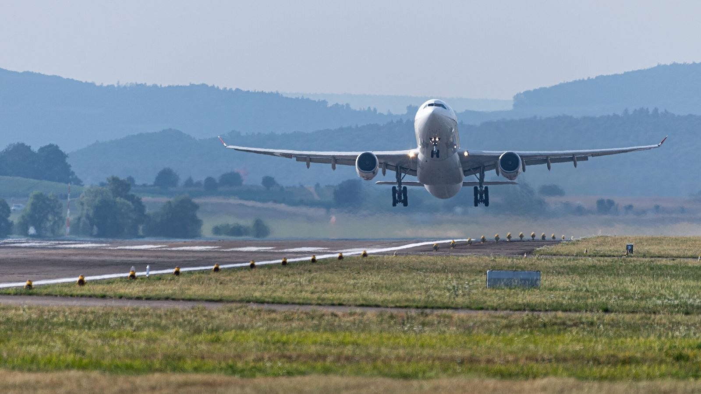
Mira-se o mais visível, não o mais influente. (Akenji)
Ação coletiva não é vergonha individual. Deveres para empresas e Estados: publicação por instalação, EIA de verdade, consulta prévia.
Cinco gotas. De qual data center?
O Redata deveria exigir publicação por instalação?
Uma etiqueta de A a G é transparência, ou a forma neoliberal da transparência?
Abster-se de usar IA é ação política ou cuidado privatizado?